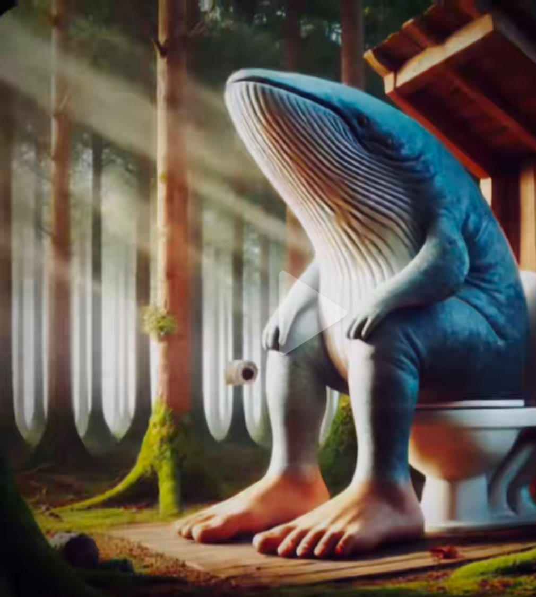

Pt14: Creació d'una pàgina multimèdia interactiva
El teu navegador no suporta l'element HTML vídeo.
Movistar ringtone
El teu navegador no suporta l'element HTML audio.
TRALALERO TRALALA
Tu navegador no soporta el elemento HTML audio.
Ampliar (+)
Reduir (-)
